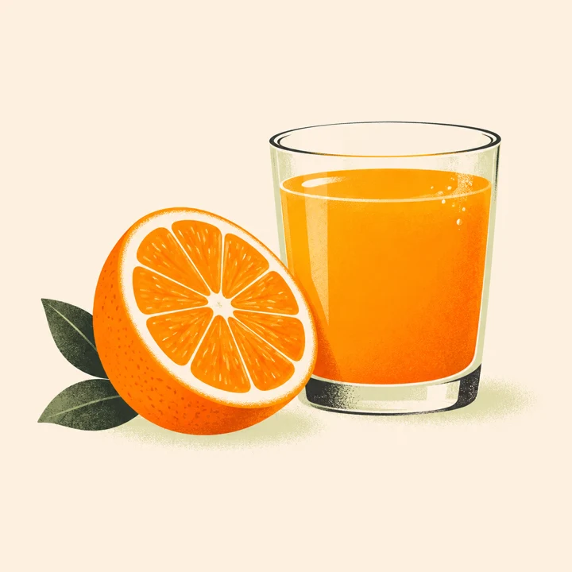
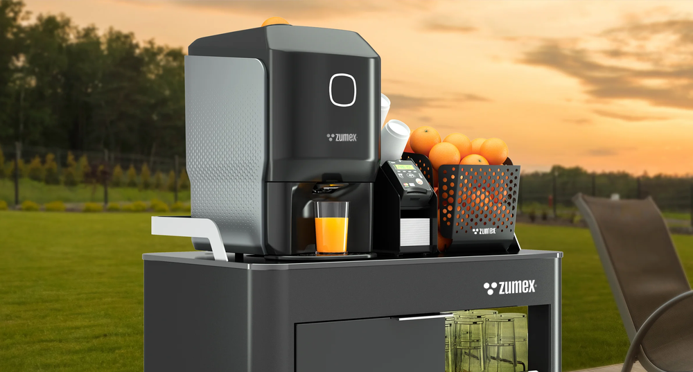
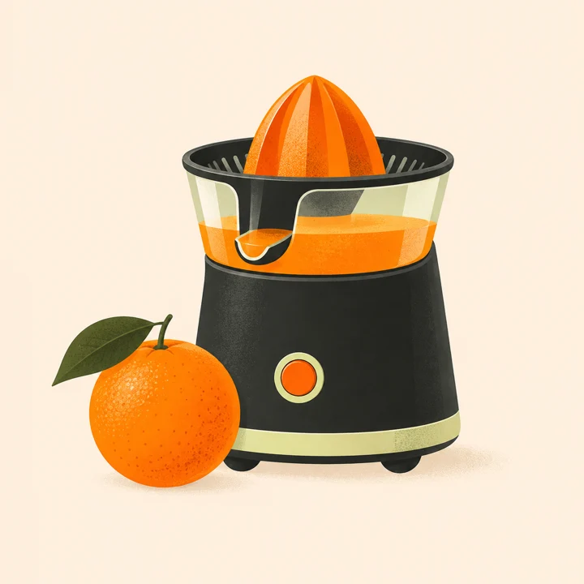

01Technologie pro chuť
Řešení od kompaktního citrusového lisu po profesionální výrobu šťáv.
PROFESIONÁLNÍ ODŠŤAVŇOVAČE ZUMEX
Proměňte čerstvé ovoce v zážitek, za kterým se zákazníci vracejí. Najdeme správný stroj pro vaši kavárnu, hotel i obchod.
Od výběru stroje po servis. Jsme vám nablízku.

ZUMEXVyrobenoPROČ ZUMEX

01Řešení od kompaktního citrusového lisu po profesionální výrobu šťáv.

02Výběr podle prostoru, spotřeby a způsobu obsluhy.
Poradenství, servis a náhradní díly z Prahy.
STVOŘENO PRO ČERSTVOST
Conical System® v akci Oficiální video Zumex · 22 s
INOVACE, KTEROU OCHUTNÁTE
Od kompaktního Conical System® až po automatizované čištění Zitrux. Technologie Zumex pomáhají zjednodušit přípravu šťávy a každodenní péči o stroj.
Poznejte Soul Series 2VAŠE PODNIKÁNÍ. VAŠE ŘEŠENÍ.
SERVIS A ZÁRUKA
Jako autorizovaný zástupce zajišťujeme opravy a dodávky náhradních dílů pro zařízení Zumex v České republice i na Slovensku.
Rozsah záruky a její uplatnění se řídí podmínkami výrobce pro konkrétní zařízení. Připravte si doklad o nákupu a výrobní číslo; s dalším postupem vám pomůže náš servis.
Záruční podmínky výrobce ↗Pomůžeme určit správný originální díl pro váš model. Pošlete nám označení stroje, výrobní číslo a ideálně fotografii potřebného dílu.
Poptat náhradní díl ↗Zaregistrujte svůj přístroj a mějte údaje o něm po ruce pro servisní komunikaci. Záruční podmínky se mohou lišit podle modelu.
Přejít na registraci produktu ↗Potřebujete poradit s obsluhou, čištěním nebo závadou? Napište model a stručný popis potíží. Domluvíme s vámi další postup.
servis@karmeb.com ↗KONTAKT
Autorizovaný zástupce Zumex pro Českou republiku a Slovensko.
Kouřimská 4/2368
130 00 Praha 3
Česká republika
Vybavení a stroje také online.
gastronakup.cz